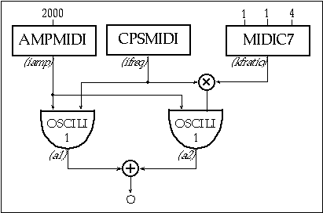
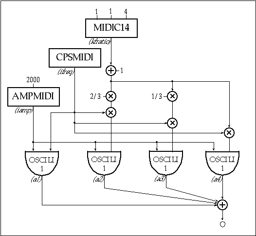
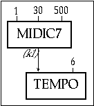
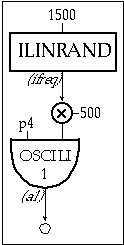
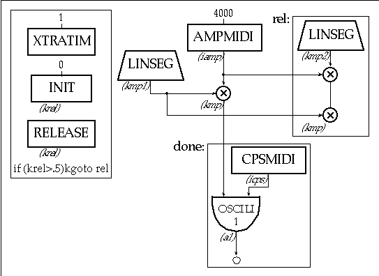
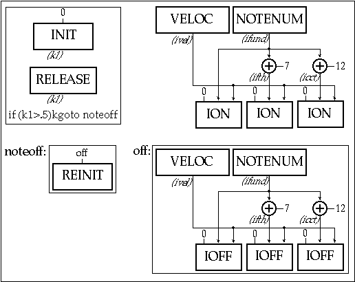
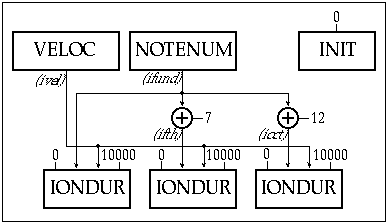
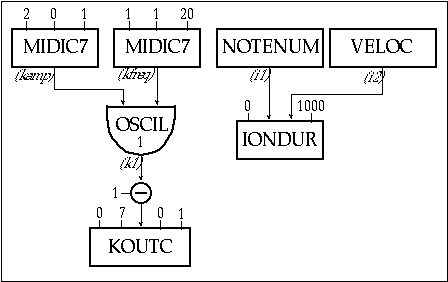
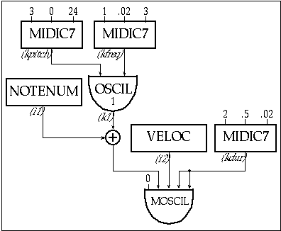
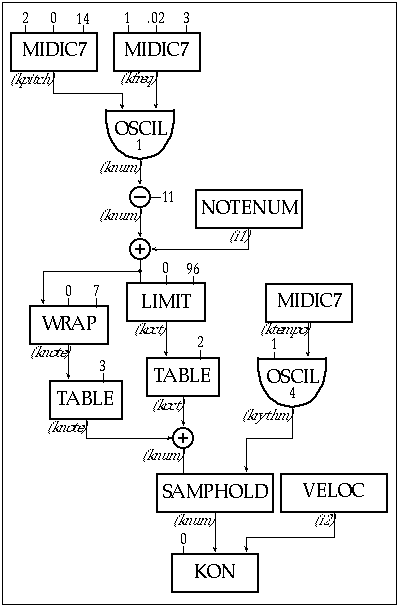

Real time control is an indispensable feature in my concept of making music. Csound is a very powerful tool, though, at least in first versions, it was a non-real time oriented synthesis language. I added some MIDI IN and OUT opcodes to make structure-generation and synthesis processes control easier. In this article I give you some examples of .orc and .sco files and a source analysis of some of these opcodes in Csound.
In the first part of this chapter I will describe the usefulness of Csound of both MIDI IN and MIDI OUT opcodes in real time operations.
Why new MIDI IN opcodes? Barry Vercoe already added most MIDI IN opcodes in 1992 release of Csound. My new opcodes only support control-change messages, which are very useful for changing Instrument parameters of any kind during the real time performance. MIDI protocol supports 128 control numbers for channel. So it is possible to control in real time up to 128 different parameters in the same Csound Instrument via MIDI. For example it is possible to change insturment vibrato speed and depth, and at the same time to change amplitude, carrier/modulating ratio and modulation index in an FM intrument, as well as envelope speed and depth of other parameters. In score activated instruments it is not possible to use control-change opcodes directly because Csound crashes if you attempt to activate them by the score: instruments containing control-change opcodes can be activated only by MIDI note-on messages. However it is possible to use them to change a global variable which can be accessed by a score activated instrument. Another example of using control-change messages is to change performance tempo while a sco is executing. (The source of this example is provided below).
Barry Vercoe’s original control-change opcodes are:
ival midictrl inum
kval midictrl inum
They get the current value (0 - 127) of a specified MIDI controller inum at i or k-rates. Unfortunately MIDI protocol only supports 7-bit-integer parameters. For this limitation I implemented new control-change opcodes. These opcodes now support:
• Scaling of integer MIDI values to floating point values in a user k-time variable minimum-maximum range
• Raw input values remapping by means of table-interpolated indexing
• Increased resolution up to 21-bit by joining more MIDI control numbers to control the same parameter.
These new opcodes make real time orc-files shorter and easier to implement and to read by eliminating additional lines for calculating scaled parameter adjustment. For a detailed description of the syntax of these opcodes, read the appendix of this chapter titled "New MIDI Opcodes Syntax ."
MIDI In-Based Instruments
In this section I give you some .orc and .sco files with real time samples of (i)midicXX opcodes. The first example is quite simple: an orchestra with two oscillators. The frequency of one oscillator is fixed and is determined by MIDI note-number, while the frequency of the second oscillator can vary continuously by means of MIDI controller number 1 (modulation-wheel) so the frequency ratio of the two oscillator can be adjusted at any moment by the user.

Figure 4.1 Block diagram of instr 401, a 2 oscillator midi instrument with mod-wheel control of pitch.
| instr 401 | |||
| ifreq | cpsmidi | ||
| iamp | ampmidi | 2000 | |
| ikoct | = | 4 | ;2 octaves transposition factor |
| kfratio | midic7 | 1, 1, ikoct | ;mod.wheel controls tranposition |
| ;range: no transp. Up 2 octaves | |||
| a1 | oscili | iamp, ifreq,1 | |
| a2 | oscili | iamp, ifreq*kfratio, 1 | ;2nd oscil is transposed by kfratio |
| out | a1+a2 | ||
| endin |
| f1 | 0 | 128 | 10 | 1 | ;sine table |
| f0 | 3600 | ;allows 1 hour of real time playing | |||
| e |
As you can see in instrument 401, a midic7 opcode is used to allow transposing the second oscillator up to two octaves high (factor 4). Line 2 of instrument 401's score contains an f0 statement. This statement is used to create an action time with no associated action. This prevent Csound session to terminate before 3600 seconds are elapsed, allowing 1 hour of real time performance. MIDI real time oriented instruments are activated by using note-on messages. So no i statements are necessary in the score. I remember you that Csound instruments containing MIDI control-change opcodes can be activated only by note-on messages. Any attempt to activate them via i statement in the score, will produce a crash of the program.
The following orc shows the use of midic14 opcode.

Figure 4.3 Block diagram of instr 402, an addition synthesis instrument with 14-bit midi controler modulation of pitch.
| instr | 402 | ||
| ifreq | cpsmidi | ||
| iamp | ampmidi | 1000 | |
| ikoct | = | 16 | ;4 octaves transposition factor |
| ioneup3 | = | 1/3 | |
| itwoup3 | = | 2/3 | |
| kfratio | midic14 | 1, 2, 1/ikoct-1, ikoct-1 | ;modulation-wheel controls msb |
| ;and breath-control controls lsb | |||
| ;tranposition range: -4 up to | |||
| ifreq1 | = | ifreq | ;+4 octaves base freq |
| kfreq2 | = | ifreq*(1+kfratio*ioneup3) | ;freq transposed 1/3 of kfratio |
| kfreq3 | = | ifreq*(1+kfratio*itwoup3) | ;freq transposed 2/3 of kfratio |
| kfreq4 | = | ifreq*(1+kfratio) | ;freq transposed 3/3 of kfratio |
| a1 | oscili | iamp, ifreq1, 1 | ;1st oscil with base freq |
| a2 | oscili | iamp, kfreq2, 1 | ;2nd is transposed 1/3 of kfratio |
| a3 | oscili | iamp, kfreq3, 1 | ;3rd is transposed 2/3 of kfratio |
| a4 | oscili | iamp, kfreq4, 1 | ;4th is transposed by kfratio |
| out | a1+a2+a3+a4 | ||
| endin |
The score for instrument 2 is identical to the one for instrument 1, so refer to it.
This instrument outputs the sum of four oscillators. The first oscillator has a fixed frequency (ifreq1) determined by the MIDI note-number (cpsmidi opcode). The last oscillator frequency (kfreq4) is obtained by a transposition factor (kfratio) controlled by a midic14 opcode. The most significant byte controller parameter is assigned to MIDI controller #1 (mod-wheel), while the less significant one is assigned to controller #2 (breath-control). Now the range is quite larger than in the previous orc: 8 octaves (from -4 to 4 octaves i.e. from 1/16 to 16). So, to obtain more precision, I used a midic14 rather than a midic7 opcode. The other two oscillator frequencies are scaled to respectively 1/3 and 2/3 of factor kfreqratio. A curious characteristic of this instrument is that frequcncy intervals among oscillators are always rational (i.e. always harmonic). If you run this instrument you will note that with transposition factors above 1, slider control behaves quite well, while, when using fractional transposition factors (from 1/16 up to 1), a little movement will produce a frequency shift too big to control with precision. To fix this problem, I will give you a new instrument almost identical to the previous one.
| instr | 403 | ||
| ifreq | cpsmidi | ||
| iamp | ampmidi | 1000 | |
| ikoct | = | 16 | ;4 octaves transposition factor |
| ioneup3 | = | 1/3 | |
| itwoup3 | = | 2/3 |
| kfratio | midic14 | 1, 2, 1/ikoct-1, ikoct-1, 2 | ;mod.wheel controls msb and |
| ;breath con. controls lsb | |||
| ;tranposition range: -4 up to | |||
| ;+4 octaves table n.2 indexing | |||
| ifreq1 | = | ifreq | ;base freq |
| kfreq2 | = | ifreq*(1+kfratio*ioneup3) | ;freq transposed 1/3 of kfratio |
| kfreq3 | = | ifreq*(1+kfratio*itwoup3) | ;freq transposed 2/3 of kfratio |
| kfreq4 | = | ifreq*(1+kfratio) | ;freq transposed 3/3 of kfratio |
| a1 | oscili | iamp,ifreq1,1 | ;1st oscil with base freq |
| a2 | oscili | iamp,kfreq2,1 | ;2nd is transposed 1/3 of kfratio |
| a3 | oscili | iamp,kfreq3,1 | ;3rd is transposed 2/3 of kfratio |
| a4 | oscili | iamp,kfreq4,1 | ;4th is transposed by kfratio |
| out | a1+a2+a3+a4 | ||
| endin |
The only difference between instrument 402 and instrument 403 is that midic14 now uses table indexing (with interpolation). The optional parameter ifn is now filled with number 2 to make reference to function table num 2. Here is the sco we see the simple use of midic14 controlling oscili frequency use table indexing for best covering of slider-center range,
| f1 | 0 | 512 | 10 | 1 | ;sine table |
and a table indexed by midic14 from 1/16 to 1 to 16.
| f2 | 0 | 513 | 7 | 0.0625 256 1 256 16 | ||
| f0 | 3600 | ;allows 1 hour of real time playing | ||||
| e | ||||||
As you can see, a half of the table space is filled with continuous values from 1/16 up to 1, while the other half is filled with values starting from 1 up to 16. This eliminates the problem arisen in instrument 402
Now I give you an intrument that uses imidic7 at i-rate (orc 4). This instrument is a combination of four different instruments. One of the four instruments can be choosen at init-time through the current value of ijump, a i-rate variable modified by imidic7 opcode, which operates as a switch for enabling one of the four instruments.
| instr 404 | |||
| inum | notnum | ||
| icps | cpsmidi | ||
| iamp | ampmidi | 4000 | |
| ijump | imidic7 | 1, 0, 4 | ;switch four Instruments at init time (range 0-4) |
| ;1=instr1, 2=instr2, 3=instr3, 4=instr4 | |||
| kctr1 | midic7 | 2, 0, 1 | ;scales different instr. parameters (range 0-1) |
| kctr2 | midic7 | 4, 0, 1 | ;scales different instr. parameters (range 0-1) |
| if ijump>1 | goto two | ;imidic7 dependent jump | |
Simple oscillator plus amplitude envelope
| kmp | linenr | iamp, .01, 1, .03 | ;ampenv |
| a1 | oscili | kmp, icps, 2 | ;audio oscillator |
| goto | out | ||
| ; | |||
| two: | if ijump>2 | goto three |
FM synthesis
| kmp | linenr | iamp, .04, .2, .03 | ;ampenv |
| kndx | oscili | 0, 30, .6, 10 | ;mod index control |
| a1 | foscili | kmp, icps*.25, 2, kctr1*4, kndx*kctr2, 1 | |
| goto | out | ||
| ; | |||
| three: | if ijump>3 | goto four |
Ring modulation and clipping synthesis
| kmp | linenr | iamp, .04, .2,. 03 | ;ampenv |
| kamp2 | oscili | iamp*.5, .25, 11 | ;clipping control |
| am1 | oscili | kmp*.01, icps, 1 | ;carrier |
| am2 | oscili | kmp*kctr1*.1, icps*kctr2*2+.5, 1 | ;modulator |
| a1 | = | am1*am2 | ;ring modulation |
| a1 | limit | a1, -kamp2, kamp2 | ;clip modulation |
| a1 | = | a1*iamp/kamp2 | ;amplitude rescaling |
| goto | out | ||
| ; | |||
| four: |
Karplus-Strong synthesis
| kmp | linenr | iamp*5, 0, .2, .03 | ;ampenv |
| a1 | pluck | kmp, icps, 10000, 5, 1 | |
| out: | out | a1 | |
| endin |
The next .orc and .sco files show the way for implementing a score-oriented orchestra, whose tempo can be modified in real time by means of MIDI.
WARNING! Set -t flag when testing this .orc! play a MIDI note to activate instr 401 if you want change score tempo.

Figure 4.7 Block diagram of instr 405 which uses a midi controller to control the tempo of a score file.
| instr | 405 | |
| k1 | midic7 | 1, 30, 500 |
| tempo | k1, 60 | |
| endin | ||

Figure 4.9 Block diagram of instr406 a random pitch instrument.
| instr | 406 | |
| ifreq | ilinrand | 1500 |
| a1 | oscili | p4, ifreq+550, 1 |
| out | a1 | |
| endin |
WARNING! Set -t flag when testing this .sco! Play a MIDI note to activate instr 405 if you want change score tempo instr 405 must be allocated only via MIDI, otherwise Csound will crash!
| f1 | 0 | 512 | 10 | 1 1 1 | ;audio wavetable |
| i6 | 0 | .2 | 2000 | ;simple random-pitched Instrument | |
| i. | + | . | . | ||
| i. | + | . | . | ||
| i. | + | . | . | ||
| i. | + | . | . | ||
| i. | + | . | . | ||
| i. | + | . | . | ||
| i. | + | . | . | ||
| i. | + | . | . | ||
| i. | + | . | . | ||
| i. | + | . | . | ||
| e | |||||
This instrument produces a stream of random-pitched notes. The speed of this note-flow can be varied by means of MIDI control #1 (mod-wheel). Note that two instruments are necessary for doing this, because a score-oriented Instrument cannot contain MIDI IN controller opcodes. So instrument 405, which contains a call to midic7 opcode, must be activated by a MIDI note-on message, while instrument 406 is activated by the i statements in sco file. If you want to play this example remember to set -t command line switch for enabling tempo-changes within instruments. In general, it is always possible to modify score-oriented instrument parameters by means of an additional MIDI-triggered instrument modifying global variables. In fact, the score-oriented instrument can access these global variables with no problems.
Last instrument uses xtratim and release opcodes. These opcodes are very useful to extend a midi-activated note duration and for implementing complex release-oriented envelopes.
The syntax of these opcodes is:
xtratim iextradur kflag release
where iextradur is the extra duration added to the end of a note to allow release, and kflag is an output flag that informs whether current note is in the release-stage or it is not.
This is the orchestra:

Figure 4.11 Block diagram of instr 406 a midi instrument featuring the xtratim and release opcodes.
| instr | 406 | |
| inum | notnum | |
| icps | cpsmidi | |
| iamp | ampmidi | 4000 |
Complex MIDI Envelope
| xtratim | 1 | ;extra-time, i.e. release duration | |
| krel | init | 0 | |
| krel | release | ;outputs release-stage flag (0 or 1 values) | |
| if (krel>.5) | kgoto rel | ;if in relase-stage goto relase section |
Attack-Sustain Section
| kmp1 | linseg | 0, .03, 1, .05, 1, .07, 0, .08, .5, 4, 1, 50, 1 |
| kmp | = | kmp1*iamp |
| kgoto | done |
Release Section
| rel: | ||
| kmp2 | linseg | 1, .3, .2, .7, 0 |
| kmp | = | kmp1*kmp2*iamp |
| done: |
End of Envelope Routine
| a1 | oscili | kmp,icps,1 |
| out | a1 | |
| endin |
In instrument 406 xtratim extends note duration 1 second more, and release tell us when current note will be in the release stage, returning a 1 (in normal stage it returns 0). An if ... kgoto statement chooses one of the two envelopes according to release opcode output. Note that, in the release-stage, last value returned by the previous envelope is used to scale the new envelope output. This thing is necessary to prevent a discontinuity during the transition from the first to the second envelope. Here the two envelopes are implemented by using linseg opcode, but any envelope-oriented opcode could be used (such as oscil1, oscil1i, line, expseg etc.). Also any number of envelopes can be inserted in both the attack-sustain and release sections, to control in different ways various parameters of an instrument in parallel.
Until now, Csound was sound synthesis language allowing audio-rate output only to files or directly to DAC. With the 1992 MIT version, MIDI IN capabilities were introduced for controlling real time performances, but its output was ever a stream of audio-samples. Now, with the new MIDI OUT opcodes it is possible to use Csound as a real time-MIDI-event generator too. All old i and k-rate opcodes of Csound can be used as input of the new MIDI OUT opcodes now, making Csound a very powerful tool for MIDI processing.
Some examples of utilization of the new opcodes could be:
•Producing complex algorythmically-generated streams of MIDI events, allowing new concepts of composing and interacting with MIDI instruments.
•Creation of powerful fully-customized MIDI effect processors such as MIDI delays, MIDI arpeggiators, MIDI message remappers etc.
•Changing external MIDI instrument parameters in real-time during a performance.
•Precise timed controlling of recording-studio devices as MIDI mixers, MIDI controlled DATs and ADATs etc.
•Generating MIDI commands to MIDI-CV interfaces to drive analog synthesizers.
•Controlling non-musical equipment like lights, images etc.
All MIDI OUT opcodes don’t have any output argument because their output is directly sent to current MIDI OUT port. Differently from some MIDI IN opcodes, it is perfectly possible to use MIDI OUT opcodes in score-oriented instruments. So an i statement in a score can activate an instruments containing any number and any kind of MIDI OUT opcodes.
For a detaliled description of the syntax of each opcode, read the appendix of this chapter titled "New MIDI opcodes syntax".
In this section I give you some .orc and .sco example of the new MIDI OUT opcodes. The first example (instrument 407) is the use of ion and ioff opcodes to output single-key-triggered chords.

Figure 4.13 Block diagram of instr 407 an instrument which "generates" midi events.
| instr 407 | ||
| k1 | init | 0 |
| ifund | notnum | |
| ifth | = | ifund+7 |
| ioct | = | ifund+12 |
| ivel | veloc | |
| ion | 0, ifund, ivel | |
| ion | 0, ifth, ivel | |
| ion | 0, ioct, ivel | |
| k1 | release | |
| if (k1>.5) | kgoto noteoff | |
| goto end | ||
| noteoff: | ||
| reinit | off | |
| off: | ||
| ioff | 0, ifund, ivel | |
| ioff | 0, ifth, ivel | |
| ioff | 0, ioct, ivel | |
| end: | ||
| endin |
The three instances of ion activate the notes of the chord. The new release opcode is used to detect if current instrument instance is terminating. If yes, a reinit statement is executed to use ioff opcode in a moment other than the initial instrument instance creation.
The same behaviour of instrument 407, but with a simpler code, can be achieved by using iondur opcode as you can see in instrument 408:

Figure 4.15 Block diagram of instr 408 which generates external midi events of a finite duration as specified by the iondur opcode.
| instr 408 | ||
| k1 | init | 0 |
| ifund | notnum | |
| ifth | = | ifund+7 |
| ioct | = | ifund+12 |
| ivel | veloc | |
| iondur | 0, ifund, ivel, 1000 | |
| iondur | 0, ifth, ivel, 1000 | |
| iondur | 0, ioct, ivel, 1000 | |
| endin |
iondur opcode has the idur additional argument, sending a note-off message after idur seconds. The note-off message is sent automatically at the deactivating-moment of the correspondent instrument instance (probably before than 1000 seconds) by giving an exaggerated value to this parameter (such as 1000).
Next instrument shows a koutc opcode example:

Figure 4.17 Block diagram of instr 409, A midi instrument which generates external
| instr 409 | |||
| i1 | notnum | ||
| i3 | veloc | ||
| kfreq | midic7 | 1, 1, 20 | ;mod.wheel controls tremolo speed |
| kamp | midic7 | 2, 0, 1 | ;breath-ctrl controls tremolo depth |
| k1 | oscil | kamp, kfreq, 1 | |
| koutc | 0, 7, 1-k1, 0, 1 | ;changes vol. of midi-chn 0 | |
| iondur | 0, I1, I3, 1000 | ||
| endin |
In this orc iondur plays a note and koutc modulates the main volume (midi-controller #7) of midi-channel 0, so a tremolo effect is produced. Frequency of tremolo can be varied in frequency via controller #1 (mod.wheel) messages, and in depth via controller #2 (breath-control) messages.
Next intrument (orc 10) is a simple utilization of moscil opcode. moscil is, together with kon and mseq, the most complex MIDI OUT opcode.

Figure 4.19 Block diagram of instr 410, a midi instrument which generates a stream of external midi note message.
| instr 410 | ||
| i1 | notnum | |
| i3 | veloc | |
| kfreq | midic7 | 1, .02, 3 |
| kdur | midic7 | 2, .5, .02 |
| kpitch | midic7 | 3, 0, 24 |
| k1 | oscil | kpitch, kfreq, 1 |
| moscil | 0, i1+k1, I3, kdur, kdur | |
| endin |
moscil outputs a stream of MIDI notes of kdur duration, each followed by a pause of kpause duration. Duration, pause, pitch and velocity of each note can be varied at k-rate. In this case the pitch of notes is varied by means of an oscil opcode. The frequency of oscil is controlled by MIDI controller #1, while its pitch-range is controlled by MIDI controller #3. Duration and pause of each note are controlled by MIDI controller #2. The time range of note-repeat cycle is from 1/25 of second (0.02x2 secs) to 1 second (0.5x2 secs).
Next example will use kon opcode (see instrument 412)

Figure 4.21 Block diagram of instr 411, a midi instrument which repeatedly "loops" through a table and generates a sequencer of external midi note-on messages.
| instr 411 | |||
| i1 | notnum | ||
| i3 | veloc | ||
| kfreq | midic7 | 1, .02, 3 | |
| kpitch | midic7 | 2, 0, 14 | |
| ktempo | midic7 | 3, .2, 25 | |
| knum | oscil | kpitch, kfreq, 1 | |
| knum | = | knum-11 | ;offset for C4 correspondence |
| koct | limit | knum+i1, 0, 96 | |
| koct | table | koct, 2 | |
| knote | wrap | knum+i1, 0, 7 | |
| knote | table | knote, 3 | |
| knum | = | koct+knote | |
| krythm | oscil | 1, ktempo, 4 | |
| knum | samphold | knum, krythm | |
| kon | 0, knum, i3 | ||
| endin |
| f1 | 0 512 10 | 1 1 1 1 | ;melody shape |
| f2 | 0 128 -17 | 0 -24 7 -12 14 0 | ;octaves |
| 21 12 28 24 35 36 | |||
| 42 48 49 60 56 72 | |||
| 63 84 70 96 77 108 | |||
| f3 | 0 16 -2 | 0 2 4 5 7 9 11 | ;C major scale |
| f4 | 0 16 -2 | 1 0 0 0 0 0 0 0 1 0 0 0 1 0 0 0 | ;rythm shape |
| f0 | 50000 | ;allows rt midi playing for 50000 seconds | |
| e |
The kon opcode is in certain ways similar to moscil. Both send a stream of note-on and note-off messages to MIDI OUT port. The difference is that kon does not have duration neither pause parameters. So new note on-off messages are generated when any of its parameter changes. So continuous curves used as parameter-controls may cause a very big on/off messages amount. Eventually, I suggest to use step functions generated by means of GEN 17 to square the output of other continuous control signals.
This protects from possible MIDI buffer overloading, and can give a more accurate control of the range of generated events. In this case GEN 17 and GEN 2 are used to generate step function to index a diatonic scale: f2 contains the octaves and f3 contains the tone/half-tone structure.f4 contains the rhythm skeleton. The value of pitch is processed by two oscillators: the first generate raw output (knum). The variable knum is used as index of table #2 (octaves) and table #3 (diatonic scale). The opcodes limit (by Robin Whittle) and wrap (by me) are very useful to limit and to wrap-around index-values that exceed a non-power-of-two number. knum is then sampled at krythm-tics rate and sent to kon.
In this chapter I introduced some of new MIDI IN, MIDI OUT, real-time-envelope-related and new useful opcodes, and I provided some simple .orc and .sco examples to learn using them.
With all these opcodes, the user can explore new ways of interacting with Csound. MIDI OUT is a new exciting and never seen feature of Csound. Control your favourite MIDI synth with Csound-generated algorythms! Run two instances of Csound in the same computer, the first outputting MIDI events only and the second generating audio signals in real time! The first instance could control an external synth toghether with a second Csound instance in parallel! You can build complex networks of internal and external MIDI-message flows. I invite all of you to experiment and to make wonderful live Csound-based concerts!